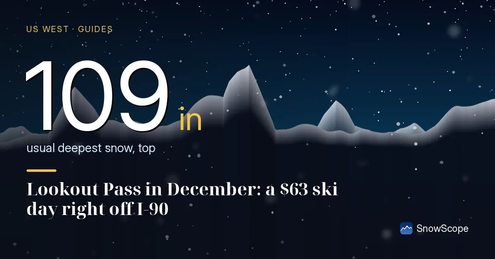

Lookout Pass in December: a $63 ski day right off I-90
Lookout Pass is the ski hill you can see from Interstate 90 at the Idaho-Montana line. A reserved midweek adult ticket costs $63, and on our snow history the upper half of the hill is usually well covered by mid-December.
See the live snow forecast for Lookout Pass in the SnowScope appSnow depth, powder alerts and the 3D map, free.
An interstate exit and an old mining town
Below the pass, Wallace is a small silver-mining town with a few motels and diners; Missoula is a longer drive east. On our mapping Lookout has 5 lifts and about 23 mi (37 km) of runs between roughly 4,510 ft (1,374 m) and 6,150 ft (1,875 m). The ski area keeps a simple, local feel.

The price table
Lookout Pass rewards planning in a small way. For 2026-2027 an adult day ticket is $63 midweek (non-holiday) when you reserve for a future date, or $66 at the window. Weekends are $75 reserved and $78 at the window, and the holiday period $79 and $82. No dynamic surprises: just reserve ahead and ski on a weekday.

Snow: the base lags, the top holds
In a typical winter of our record, lasting snow reaches mid-mountain, about 5,330 ft (1,624 m), around 1 November. On a typical 15 December, the base has 18 in (45 cm), mid-mountain 30 in (75 cm) and the top 37 in (95 cm).
On that date, 85 % of winters had at least 20 in (50 cm) at mid-mountain and 96 % at the top, but only 39 % at the base. By Christmas Day the share at the base rises to 61 %. A lean December still left 17 in (44 cm) at mid-mountain on the 15th.
Lookout, Schweitzer or Snowbowl?
Schweitzer, above Sandpoint, is the bigger mountain with deeper snow up top, 54 in (138 cm) on a typical 15 December, and sells a 2026/2027 3-Pack at $249, which the resort itself puts at $83 a day. Montana Snowbowl near Missoula charges $78 on weekdays and $85 on weekends, with 30 in (76 cm) at mid-mountain on a typical 15 December.
Lookout is the cheapest day of the three on weekdays, with mid-mountain snow on par with Snowbowl.
Then and now
Mid-mountain held 33 in (84 cm) on a typical 15 December in the first 15 winters of our record, and every winter passed 20 in. In the last 15 winters the typical value was 26 in (66 cm) and 73 % passed 20 in. Last winter had 13 in (34 cm) on that date, one of the thin ones.
Tips for skiers
- Reserve your date ahead and pick a weekday: that is the $63 ticket.
- Expect the lowest runs to be thin before Christmas; the upper lifts carry the early season.
- I-90 over Lookout Pass gets chain requirements in storms: check the road report before you drive.
- Stay in Wallace for a cheap night close to the lifts.
References and credits
- Lookout Pass, lift tickets 2026-2027 (official) skilookout.com/lift-tickets/
- Schweitzer, lift ticket 3-Pack 2026/2027 (official) www.schweitzer.com/plan-your-trip/deals-and-packages/lift-ticket-3pack
- Montana Snowbowl, lift tickets 2026/27 (official) montanasnowbowl.com/sbblog/lift-tickets/
- OpenSkiMap (mapped lifts and runs) openskimap.org/
- avalanche.org, US avalanche centers and forecasts avalanche.org/
About these numbers
Snow numbers: SnowScope snow history, 46 past winters (1980-81 to 2025-26) at the base, mid-mountain and top heights given, a reconstruction of past snow for an area corrected for height (ERA5-Land based; Snow_Hydro 1 km for Morocco), not the ski area's own snow reports. Current snow: the SnowScope snow map. Lifts, runs and heights: OpenSkiMap mapping. Prices: the official pages listed below, read on 13 November 2026; dynamic prices change with the date and with demand.
Official avalanche bulletins: avalanche.org (US national portal)
Cite this report
For research, teaching or the press: the numbers and charts are free to reuse under CC BY 4.0 with this citation.
SnowScope (2026), Lookout Pass in December: a $63 ski day right off I-90, https://snowscope.app/blog/en/2026/11/lookout-pass-december-skiing-63-dollar-midweek.html, accessed 2026-11-14
SnowScope (Atlas Labs). (2026, November 14). Lookout Pass in December: a $63 ski day right off I-90. SnowScope snow reports. https://snowscope.app/blog/en/2026/11/lookout-pass-december-skiing-63-dollar-midweek.html
BibTeX
@misc{snowscope2026lookoutpassdecemberskiin,
author = {{SnowScope (Atlas Labs)}},
title = {Lookout Pass in December: a $63 ski day right off I-90},
year = {2026},
month = nov,
howpublished = {\url{https://snowscope.app/blog/en/2026/11/lookout-pass-december-skiing-63-dollar-midweek.html}},
note = {Published 2026-11-15 09:34 UTC; accessed 2026-11-14}
}· CC BY 4.0 · Methods, data and tools →
Lookout Pass: snow and temperature by height, this winter vs last (tools) →
Follow Lookout Pass
Free: a message when fresh snow is coming, and the forecast every morning.
More snow reports

Mt Baker will receive 16.5 in (42 cm) of new snow through November 8, leading the US West, based on our model run on November 5.

Kendall Mountain now has 51 inches on upper slopes as of November 5, 2026. Snow peaks in late December and March—the best historical windows to visit.

Heavenly, Sierra-at-Tahoe and Mt. Rose have more snow on 19 November than in any winter since 1980-81. How much fell, the measured gauges, the weather behind it and the best days to go.